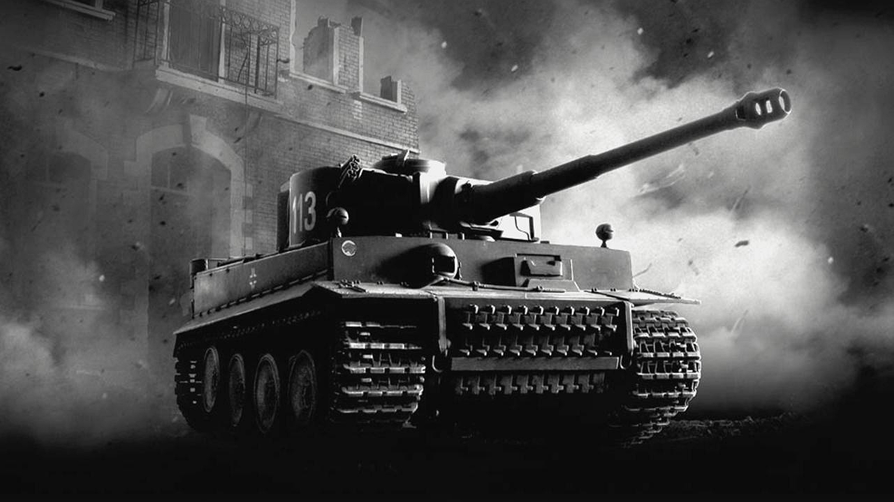

Tank
A tank is an armoured fighting vehicle designed for front-line combat, with heavy firepower, strong armour, tracks and a powerful engine providing good battlefield maneuverability. Modern tanks are versatile mobile land weapon system platforms, mounting a large-calibre cannon in a rotating gun turret, supplemented by mounted machine guns or other weapons.
They combine this with heavy vehicle armour which provides protection for the crew, the vehicle's weapons, and its propulsion systems, and operational mobility, due to its use of tracks rather than wheels, which allows the tank to move over rugged terrain and adverse conditions such as mud, and be positioned on the battlefield in advantageous locations.
These features enable the tank to perform well in a variety of intense combat situations, simultaneously both offensively with fire from their powerful tank gun, and defensively due to their near invulnerability from common firearms and good resistance from heavier weapons, all while maintaining the mobility needed to exploit changing tactical situations. Fully integrating tanks into modern military forces spawned a new era of combat, armoured warfare.